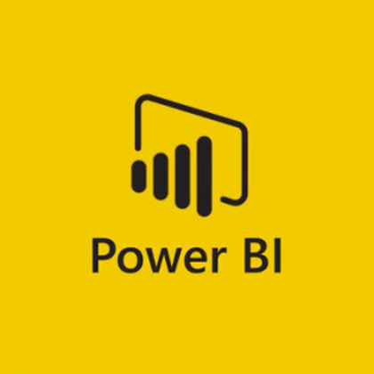

Ferramentas para análise de Dados
Python
Python é uma linguagem de programação de alto nível, amplamente utilizada devido à sua simplicidade e versatilidade.
É popular na análise de dados por suas bibliotecas poderosas como Pandas, NumPy e Matplotlib, que facilitam a manipulação,
análise e visualização de dados. Python é ideal para automação de tarefas repetitivas, desenvolvimento de algoritmos complexos e
implementação de modelos de aprendizado de máquina.

Excel
Excel é uma ferramenta de planilhas desenvolvida pela Microsoft, amplamente usada para análise de dados e tarefas de contabilidade.
Ele oferece funcionalidades como tabelas dinâmicas, gráficos, fórmulas e funções avançadas que permitem aos usuários organizar,
analisar e visualizar dados de maneira eficiente.
Excel é acessível e intuitivo, sendo uma escolha comum para usuários de negócios e analistas financeiros.

Power - BI
Power BI é uma ferramenta de business intelligence da Microsoft que permite a criação de relatórios
e dashboards interativos. Ele se integra facilmente com diversas fontes de dados, facilitando a coleta e análise de dados em tempo real. Com seus recursos de visualização avançados, Power BI ajuda os usuários a transformar dados brutos em insights visuais claros e acionáveis, suportando a tomada de decisões informadas.
Porque usamos essas ferramentas
Complementaridade das Ferramentas:
Python pode ser usado para pré-processar e limpar dados complexos, realizar análises avançadas e criar algoritmos personalizados.
Excel pode ser usado para análises rápidas, manipulações manuais e prototipagem inicial de dados.
Power BI pode ser usado para criar visualizações interativas e dashboards que comunicam insights de maneira eficaz.br
Eficiência no Fluxo de Trabalho:
Python pode automatizar a coleta e a preparação dos dados, que podem ser exportados para Excel para uma análise preliminar e ajuste manual.
Power BI pode então consumir esses dados processados para criar relatórios e dashboards dinâmicos, facilitando a visualização e a tomada de decisões baseadas em dados.
Sinergia das Funcionalidades:
Python pode tratar dados complexos e grandes volumes de informação que Excel não consegue manejar eficientemente.
Excel proporciona uma interface familiar para manipulação e ajuste fino dos dados.
Power BI oferece capacidades avançadas de visualização e integração contínua de dados, que podem ser atualizados automaticamente.
Escalabilidade e Adaptabilidade:
Usar essas ferramentas em conjunto permite que pequenas e grandes empresas escalem suas soluções de BI conforme necessário, adaptando-se às necessidades e capacidades da organização.
Python
Python é uma linguagem de programação de alto nível, amplamente utilizada devido à sua simplicidade e versatilidade. É popular na análise de dados por suas bibliotecas poderosas como Pandas, NumPy e Matplotlib, que facilitam a manipulação, análise e visualização de dados. Python é ideal para automação de tarefas repetitivas, desenvolvimento de algoritmos complexos e implementação de modelos de aprendizado de máquina.
Excel
Excel é uma ferramenta de planilhas desenvolvida pela Microsoft, amplamente usada para análise de dados e tarefas de contabilidade. Ele oferece funcionalidades como tabelas dinâmicas, gráficos, fórmulas e funções avançadas que permitem aos usuários organizar, analisar e visualizar dados de maneira eficiente. Excel é acessível e intuitivo, sendo uma escolha comum para usuários de negócios e analistas financeiros.
Power - BI
Power BI é uma ferramenta de business intelligence da Microsoft que permite a criação de relatórios e dashboards interativos. Ele se integra facilmente com diversas fontes de dados, facilitando a coleta e análise de dados em tempo real. Com seus recursos de visualização avançados, Power BI ajuda os usuários a transformar dados brutos em insights visuais claros e acionáveis, suportando a tomada de decisões informadas.
Porque usamos essas ferramentas
Complementaridade das Ferramentas:
Python pode ser usado para pré-processar e limpar dados complexos, realizar análises avançadas e criar algoritmos personalizados.
Excel pode ser usado para análises rápidas, manipulações manuais e prototipagem inicial de dados.
Power BI pode ser usado para criar visualizações interativas e dashboards que comunicam insights de maneira eficaz.br
Eficiência no Fluxo de Trabalho:
Python pode automatizar a coleta e a preparação dos dados, que podem ser exportados para Excel para uma análise preliminar e ajuste manual.
Power BI pode então consumir esses dados processados para criar relatórios e dashboards dinâmicos, facilitando a visualização e a tomada de decisões baseadas em dados.
Sinergia das Funcionalidades:
Python pode tratar dados complexos e grandes volumes de informação que Excel não consegue manejar eficientemente.
Excel proporciona uma interface familiar para manipulação e ajuste fino dos dados.
Power BI oferece capacidades avançadas de visualização e integração contínua de dados, que podem ser atualizados automaticamente.
Escalabilidade e Adaptabilidade:
Usar essas ferramentas em conjunto permite que pequenas e grandes empresas escalem suas soluções de BI conforme necessário, adaptando-se às necessidades e capacidades da organização.